Final project proposal
Introduction
Game Collectors
Game Collectors is a company specializing in the sales of rare, older, and otherwise nostalgic video games and their consoles.
Target audience
People who would use this site are those who are avid collectors of older video game systems.
The goal of using such a site is to purchase and add imported or other rare iterations of systems to collections.
Comparative analysis
Retromodding
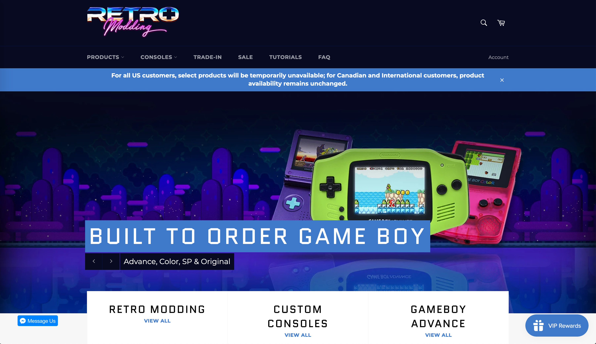 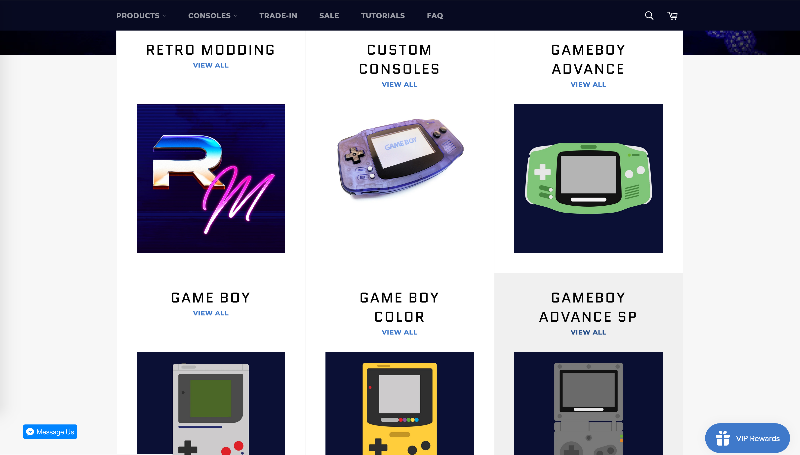 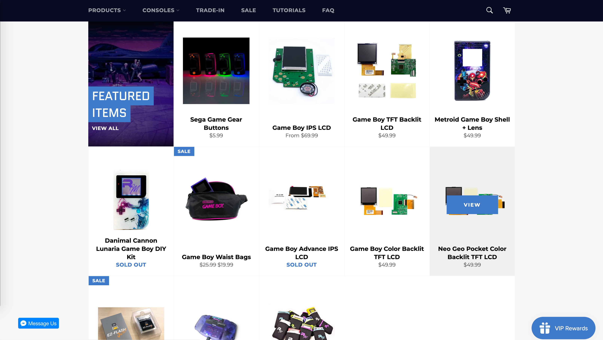 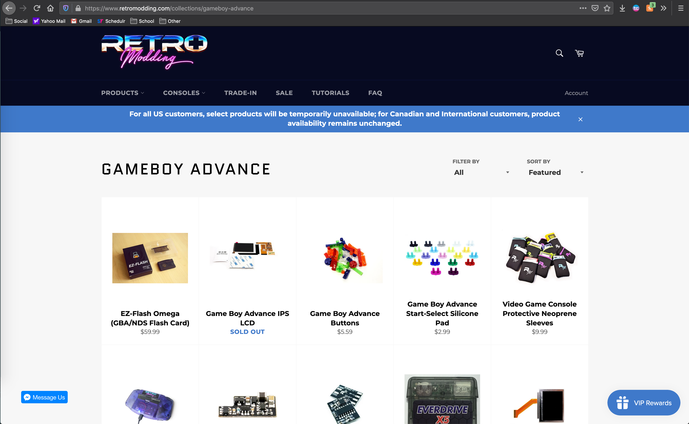J4U
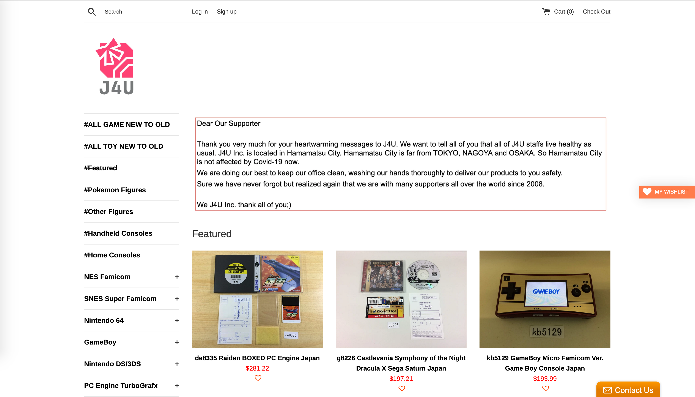 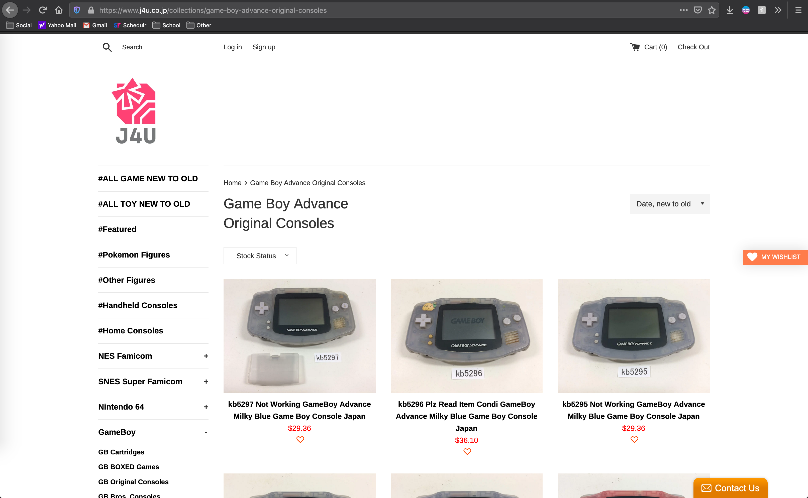Gamestop Retro Gaming
 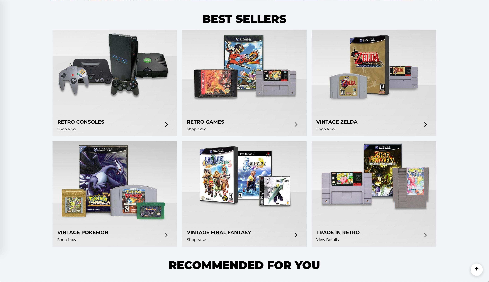
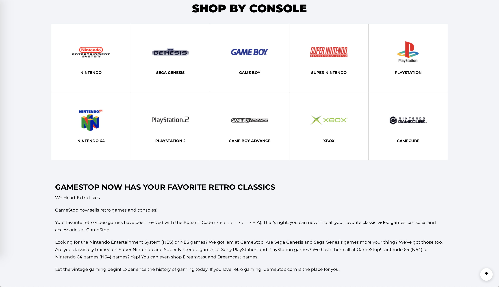
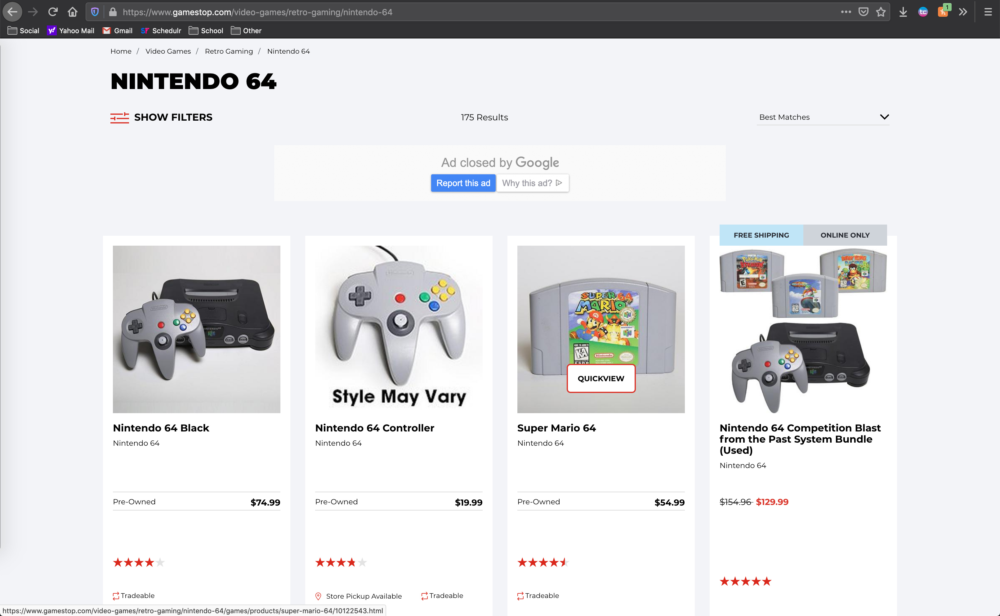
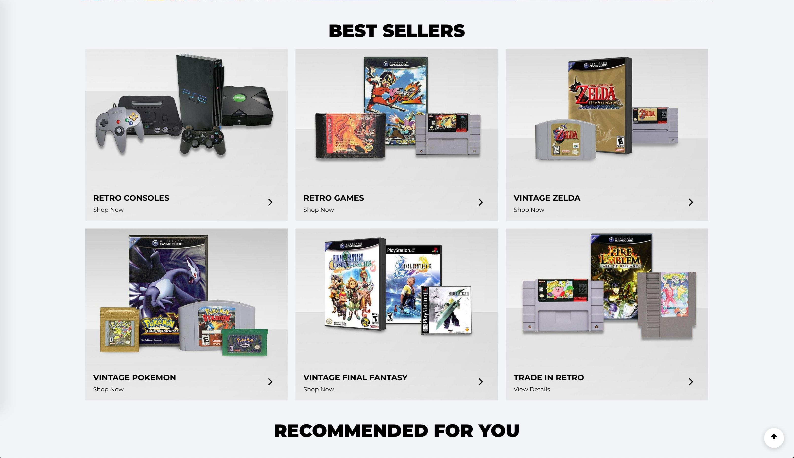
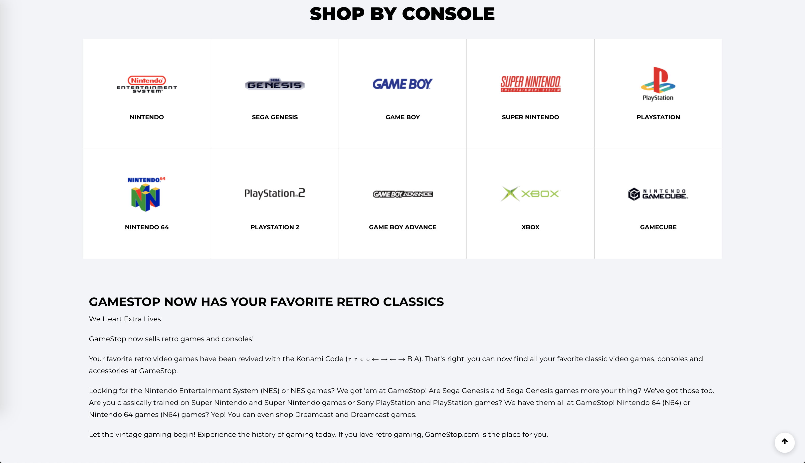
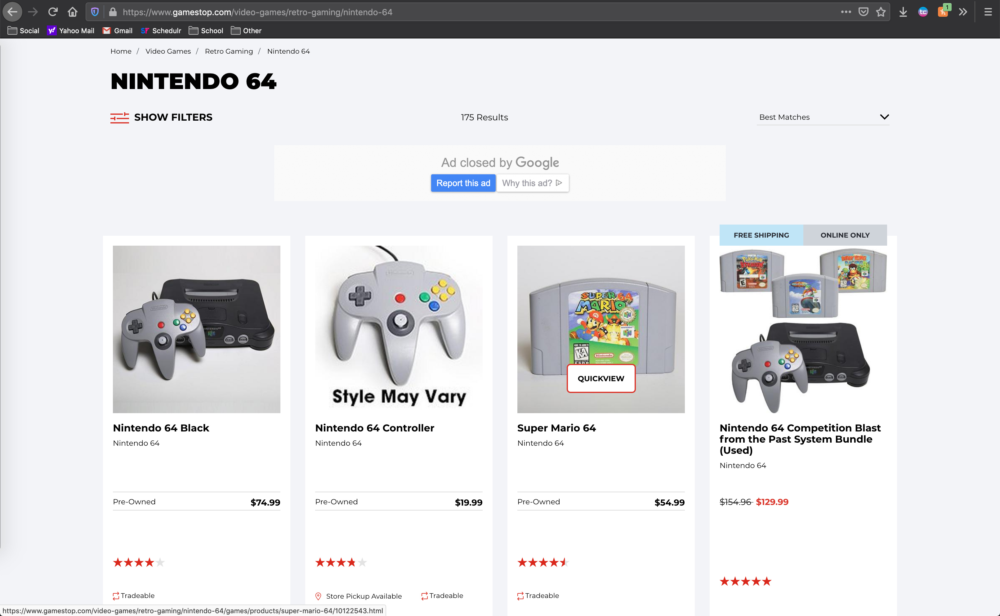
Website content
Home
Welcome to Game Collectors!
[Description of the first image.]
About Us
Game Collectors is a small business who specializing in all things retro gaming. We strive to have a wide array of old-school consoles, video games, and other collectibles, and we also accept trade-ins!
[Image of Location.]
Contact Us
Hello! Do you have a general question or are you looking to make a trade-in? Feel free to fill out the form below, come in, or give us a call!
[Image of Staff.]
Nintendo
Here you will find all Nintendo items we have in stock. If you are looking for anything in particular, please contact us and we will see what we can do!
[Nintendo 64 Gray Console.]
[Nintendo 64 Clear Blue Console (JP Import).]
[Nintendo Gameboy Advance Original Console, Spice Orange.]
[Shrek 2, Nintendo Gameboy Advance Video.]
[Super Nintendo Entertainment System Console, NTSC Version.]
[Nintendo Gamecube, Spice Orange (JP Import).]
[Mother 3, Gameboy Advance (JP Import).]
Sega
Here you will find all Sega items we have in stock. If you are looking for anything in particular, please contact us and we will see what we can do!
[Sega Dreamcast Console.]
[Sega Genesis Console.]
[Sonic the Hedgehog 3, Sega Dreamcast.]
Sony
Here you will find all Sony items we have in stock. If you are looking for anything in particular, please contact us and we will see what we can do!
[Sony Playstation 1 Console.]
[Sony Playstation 2 Slim Version Console, Silver.]
[We (Heart) Katamari, Playstation 2.]
Atari
Here you will find all Atari items we have in stock. If you are looking for anything in particular, please contact us and we will see what we can do!
[Atari 2600 Console.]
Arcade
Here you will find all arcade items we have in stock. If you are looking for anything in particular, please contact us and we will see what we can do!
[Donkey Kong 3 Complete Motherboard.]
[27" CRT (Tube Only).]
Note: Shipment of large arcade items is limited to domestic freight; we hope for your understanding about shipping large cabinets and other large parts for arcade systems.
[Description of the first image.]
Trade-In
Want to trade in some gear or games? We are happy to help! Currently, we can only accept trade-in at our location, but we hope to expand further in the future! So, if you are in the area, you may exchange your items for cash or store-credit!
Note: We test the products as they come in as thoroughly as possible and assign value based upon our evaluations. Not only does this help us ensure we get acceptable media, but also ensures that the customers who later buy the items are happy, too!
[Description of the first image.]